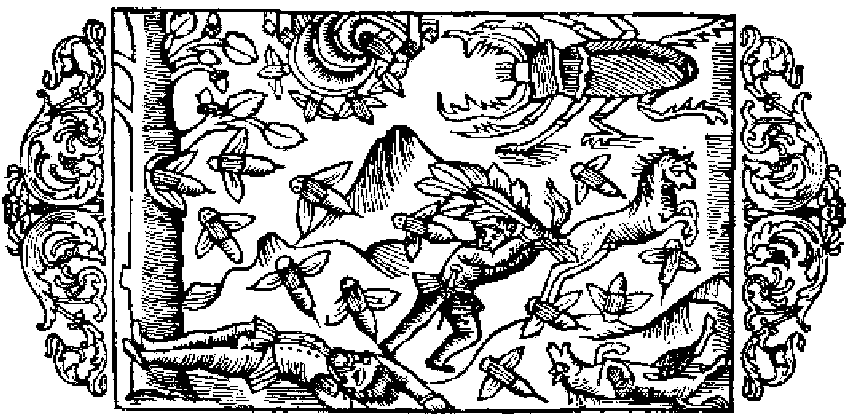

Om skalbaggar, bålgetingar och vanliga getingar af två slag

Den så kallade flygande hjorten anses visserligen stamma från skalbaggarnas släkte, men den är af naturen renligare, djärfvare i striden och har större läkedomskraft; den kallas skogsskalbagge, emedan den förtär icke träck, utan trädens löf. På hufvudet har den horn, som till formen likna hjortens, men äro rörliga; med dessa griper den också föremål och fasthålller dem, såsom Albertus utförligt beskrifver (bok 12, traktat 3, kapitel 7). Skogsskalbaggens horn äro alltså mycket långa och väpnade med tvåklufna tänger, som den, när den vill bitas, kniper samman. Sidana horn plägar man hangä om halsen pi barn såsom en amulett, eller ocksa gör man en krans däraf och fäster den vid hufvudbonaden; i synnerhet bruka de ynglingar så göra, hvilka förträdesvis ha i uppdrag att anställa jakt på dessa behornade skalbaggar. Under den kalla årstiden hålla sig dessa dolda i hålor. ›Nigidius kallar dem lucaniska skalbaggar›, enligt hvad Plinius säger (bok 11, kapitel 28). ›Ett annat slags skalbaggar åter äro de, som bakom sig med fötterna hoprulla väldiga bollar af träck och i dessa inhysa sitt maskliknande yngel till skydd mot den stränga vinterkylan. Somliga flyga omkring under starkt brummande och surr. Andra gräfva tätt med hål i eldstäderna och på ängarna och låta nattetid höra ett gällt gnisslande läte›, enkannerligen i de hagar i Norden, där hästarna gå i bet. Det finns äfven i Norden bålgetingar med långsträckt kropp, hvilka Plinius (i samma boks 21. kapitel) kallar större getingar; med afseende på sättet att flyga och surret äro de icke olika skalbaggarna, men ha en högeligen farlig gadd. Dessutom gifves det två slags getingar, mindre och större. De mindre äro sådana, som jaga maskar, flugor och större spindlar och bo under hustaken, liksom i en säck af bast, enär de göra sina bon af lera, för att där kunna förvara sina vaxkakor. Fiskaren har i dessa djur mycket svåra fiender, ty de suga ut vätskan ur all fisk, innan den hinner torka och hårdna i solvärmen. Deras stygn förorsakar en röd svullnad i förening med häftig smärta, men den botas, om man pålägger ett blad af kattosten eller, ännu bättre, stryker saft af denna ört därpå.
- Skogsskalbaggen
- Skalbagge med långa horn
- Skalbaggarnas horn amuletter för barnen
- Skalbaggar som lefva i träck
- Bålgetingar
- Två slags getingar, som göra ohögn på fisken.
- Kattostens blad botar getingarnas stygn.
- Skalbaggar, som lefva i träck.
- Bålgetingar.
- Två slags getingar, som göra ohägn på fisken.
- Kattostens blad botar getingarnas stygn.